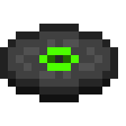

 Raison 10 : Le Son de Minecraft - Une Immersion Auditive Unique 
Au-delà des graphismes et du gameplay, Minecraft plonge les joueurs dans une expérience auditive unique. La musique douce, les bruits ambiants et les sons spécifiques à chaque action créent une ambiance captivante qui renforce l'immersion dans le jeu.
Les Merveilleuses Musiques de C418
La bande-son de Minecraft, composée par C418, est devenue l'une des plus emblématiques du monde du jeu vidéo. Ses mélodies minimalistes et apaisantes accompagnent les joueurs dans leurs aventures, créant une atmosphère relaxante qui contraste avec l'exploration ou la survie.
Des Sons Qui S'ancrent dans la Mémoire
Qui n'a jamais sursauté en entendant le sifflement d'un creeper prêt à exploser ? Ou encore le doux bruit du bois qui craque lorsque vous abattez un arbre ? Chaque action dans Minecraft est accompagnée de sons distincts qui renforcent l'immersion et créent un lien émotionnel fort avec le jeu.
Des Sons Ambiants qui Donnent Vie au Monde
Que ce soit le bruit du vent soufflant dans les montagnes, l'eau qui s'écoule dans les rivières ou les créatures qui rôdent la nuit, les sons ambiants de Minecraft participent à l'immersion totale dans ce monde. Chaque biome a son propre univers sonore, et chaque exploration devient une expérience sensorielle.
Musique et Relaxation
La bande-son de Minecraft est également utilisée en dehors du jeu, par des étudiants qui révisent ou des personnes cherchant à se détendre. Ces musiques transcendent leur fonction première pour devenir des outils de relaxation, reconnues pour leur pouvoir apaisant.
Conclusion
L'univers sonore de Minecraft, que ce soit par sa musique ou ses bruitages, enrichit l'expérience du joueur de manière subtile mais puissante. Ces sons se sont gravés dans la mémoire collective, contribuant à l'unicité du jeu.